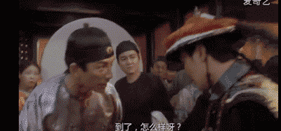

清楚浮动的3种方式
在浮动元素后面增加空标签，给空标签设置 `clear： both` 属性——增加了无意义标签
给浮动元素的父容器增加 `overflow：hidden/auto`属性——影响父容器内其他元素的position定位
给父元素设置伪类，并设置`clear: both`属性

浮动本来的意义 浮动的意义原本仅是用来让文字环绕在图片周围而已。
ul本体
child1
child2
child3
有序列表之外